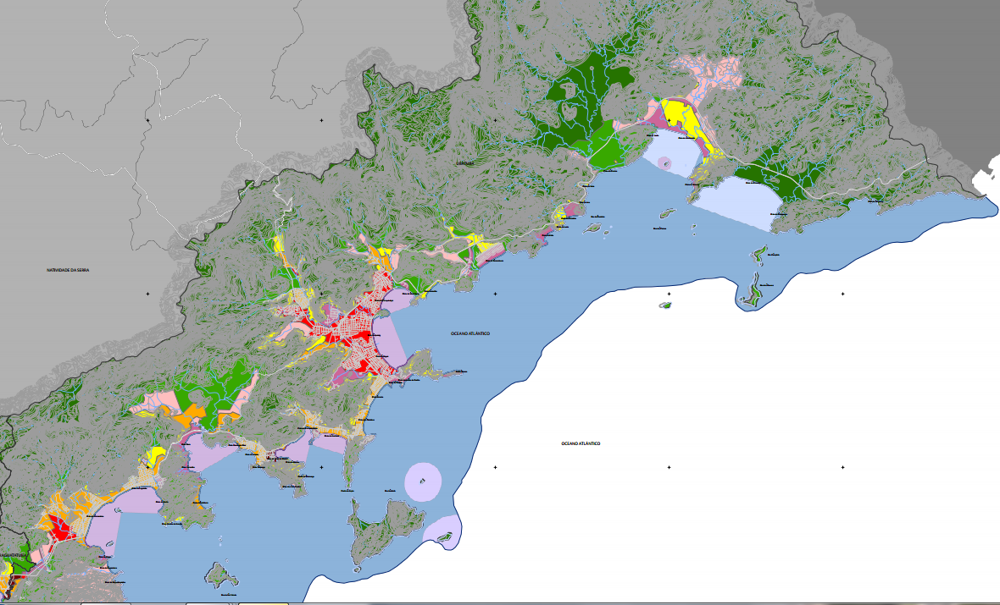

Repassando informações da Prefeitura de Ubatuba:
Audiências sobre Zoneamento Ecológico-Econômico do Litoral Norte começam em outubro
Documentos e mapas já estão disponíveis para consulta pública

A Secretaria Executiva do Grupo Setorial de Coordenação do Zoneamento Ecológico-Econômico do Litoral Norte (ZEE-LN) divulgou o calendário de audiências públicas sobre o tema, que acontecerão nas quatro cidades do Litoral Norte (Ilhabela, São Sebastião, Caraguatatuba e Ubatuba).
A primeira das audiências será realizada em Ubatuba, no próximo 24 de outubro, às 17 horas, no auditório da Universidade de Taubaté (Unitau), Campus Ubatuba, localizado na avenida Castro Alves, 392 – bairro Itaguá.
O ZEE ou Zoneamento Ambiental é o instrumento que determina o que pode ou não ser feito em áreas protegidas ambientalmente. Seu objetivo é garantir o uso sustentável dos recursos naturais e o equilíbrio dos ecossistemas existentes e compatibilizar o desenvolvimento socioeconômico das comunidades que vivem nesses territórios com a conservação ambiental.
O ZEE é fundamental em um município como Ubatuba, que tem mais de 80% de sua área em parque estadual. O ZEE vigente foi estabelecido por um decreto do governo do Estado em 2004 e encontra-se atualmente em período de revisão.
A responsabilidade pela elaboração da nova proposta do ZEE cabe à Coordenadoria de Planejamento Ambiental do Estado da Secretaria de Estado do Meio Ambiente (CPLA/SMA). A Prefeitura de Ubatuba contribuiu com esse processo coletando todas as propostas encaminhadas pela população, por entidades da sociedade civil e pelos técnicos da própria Prefeitura em conjunto com o Conselho Municipal de Meio Ambiente.
Audiências públicas
As audiências públicas nos quatro municípios do Litoral Norte são um passo prévio à promulgação do novo ZEE por decreto do Governador do Estado.
Reuniões com as comunidades tradicionais de Ubatuba, prévias à audiência pública, serão realizadas nos dias 17 e 18 de outubro em horários e locais a serem confirmados pela Secretaria Municipal de Meio Ambiente (SMMA). Nessas reuniões, a CPLA esclarecerá as dúvidas das comunidades, para que a mesma prepare os documentos e argumentos a serem apresentados na ocasião de realização da Audiência Pública.
Para conferir o calendário das demais cidades e o edital completo de convocação das audiências, clique no link http://www.ambiente.sp.gov.br/cpla/edital-de-convocacao-de-audiencias-publicas-sobre-a-proposta-de-revisao-do-zoneamento-ecologico-economico-do-litoral-norte-de-responsabilidade-da-cplasma/
Consulta aos documentos
O material da proposta de revisão do ZEE-LN, que inclui a minuta de novo decreto com as modificações sugeridas e o mapa base com os ajustes de limites validados pelas quatro prefeituras, já está disponível para consulta pública. Os documentos podem ser lidos no site da Coordenadoria de Planejamento Ambiental da Secretaria de Estado do Meio Ambiente (SMA/CPLA) link http://www.ambiente.sp.gov.br/cpla/ ou em papel, de segunda a sexta-feira, até o dia 4 de novembro, nos seguintes locais e horários em Ubatuba:
1. Secretaria Municipal do Meio Ambiente, Rua Professor Thomas Galhardo, 1172, Centro, Ubatuba/SP, das 8h30 às 12h e das 13h às 17h.
2. Fundação Florestal - APA Marinha do Litoral Norte, Rua Dr. Esteves da Silva, 510, Centro, Ubatuba/SP, das 9h às 12h e das 13h às 16h.
Para mais informações sobre esse tema, entrar em contato com a Secretaria Municipal do Meio Ambiente, Rua Professor Thomas Galhardo, 1172, Centro, Ubatuba/SP, das 8h30 às 12h e das 13h às 17h ou com a equipe da CPLA Tel.: (11) 3133-4024 (luciass@ambiente.sp.gov.br).


{kind=link}